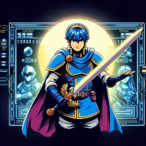
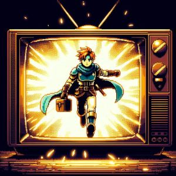
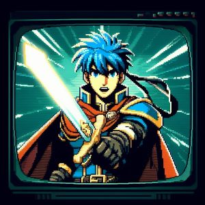
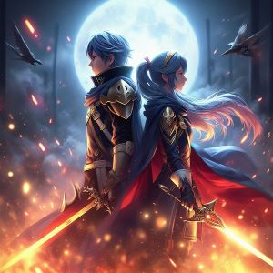
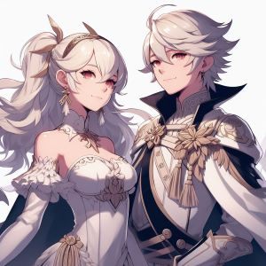
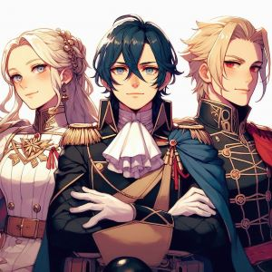

Fire Emblem has a passionate and dedicated fanbase that celebrates the series through fan art, fanfiction, discussion forums, and fan-run events. The sense of community and camaraderie among fans contributes to the series' enduring popularity.
Intelligent Systems continually introduces new gameplay mechanics, features, and storytelling techniques with each installment, keeping the series fresh and appealing to both longtime fans and newcomers alike. To learn about each individual game, you can learn more on the games page.
Most Popular Games
Game
Year
Console
Fire Emblem: Awakening
2012
Nintendo 3DS
Fire Emblem: Three Houses
2019
Nintendo Switch
Fire Emblem: Fates
2015
Nintendo 3DS
Fire Emblem: Blazing Blade
2003
Game Boy Advance
Fire Emblem: Path of Radiance
2005
GameCube
Fire Emblem: Shadows of Valentia
2017
Nintendo 3DS
Popular Characters
These are just a few examples of the many memorable characters that populate the Fire Emblem series.

AI generated image using Bing
Marth
As the original protagonist of the series, Marth is often considered an iconic figure. He first appeared in "Fire Emblem: Ankoku Ryū to Hikari no Tsurugi" and has since appeared in numerous games, becoming a symbol of the franchise.

AI generated image using Bing
Roy
Roy is the main protagonist of "Fire Emblem: The Binding Blade" and gained further popularity as a playable character in "Super Smash Bros. Melee." He's known for his sense of duty and leadership.

AI generated image using Bing
Ike
Introduced in "Fire Emblem: Path of Radiance" and later appearing in "Fire Emblem: Radiant Dawn," Ike is a skilled swordsman and a fan-favorite character known for his strength and determination.

AI generated image using Bing
Chrom & Lucina
Chrom is the main protagonist of "Fire Emblem: Awakening" and serves as a key figure in the game's story. He's known for his sense of justice and leadership skills. Lucina is a central character in "Fire Emblem: Awakening," known for her role in the game's storyline and her distinctive mask. She has become one of the most recognizable characters in the series. Chrom is Lucina's father.
AI generated image using Bing
Hector & Lyn
Hector is one of the main characters in "Fire Emblem: The Blazing Blade" and is known for his strength, loyalty, and fiery personality. Lyn is another protagonist from "Fire Emblem: The Blazing Blade" and is beloved for her courage, grace, and exceptional swordsmanship.
AI generated image using Bing
Robin
The customizable protagonist of "Fire Emblem: Awakening," Robin can be male or female and is known for their strategic mind and pivotal role in the game's plot.

AI generated image using Bing
Corrin
The player character in "Fire Emblem Fates," Corrin is a prince/princess caught in the midst of a conflict between two warring nations. They possess the unique ability to transform into a dragon.

AI generated image using Bing
Edelgard, Dimitri, & Claude
The three main protagonists of "Fire Emblem: Three Houses," each representing one of the game's titular houses, have quickly gained popularity for their depth of character and complex story arcs.